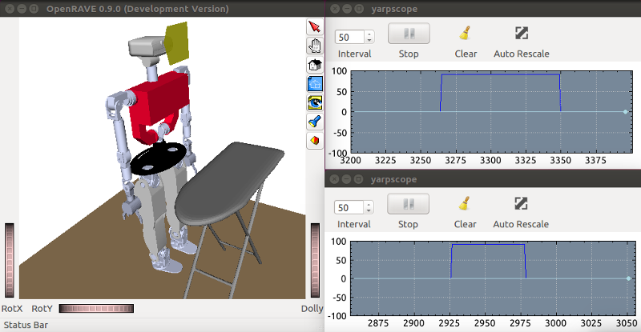

Tutorial: Force/Torque Sensors
Requires at least YARP 3.4. First, activate the teoSim Force/Torque Sensors: In the YARP application manager instance, navigate through Applications > teoSimBase_App > right-click on the openraveYarpPluginLoaderClient corresponding to multipleanalogsensorsserver > Run
Via GUIs
To view the force/torque signals, perform the sequence:
- In the YARP application manager instance, navigate through
Applications>teoSimTools_App> right-click on the correspondingyarpscope>Run - In the YARP application manager instance, navigate through
Applications>teoSimTools_App> right-click on the corresponding (bottom frame) connection >Connect
Activate physics and move joints in teoSim, and you should get results similar to the figure below.

Via APIs
The preferred approach, using the APIs provided by YARP within our programs and scripts.
- APIs
- yarp::dev::ISixAxisForceTorqueSensors
- Implementation in simulator